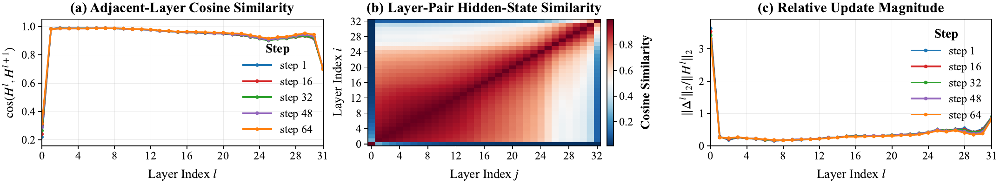
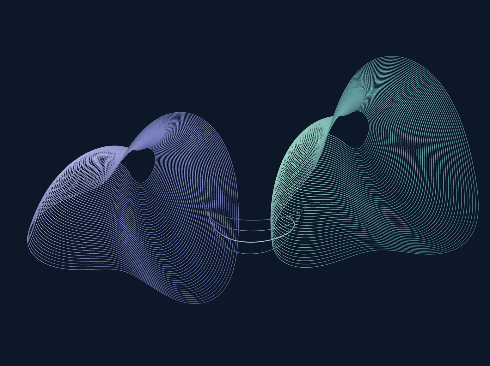
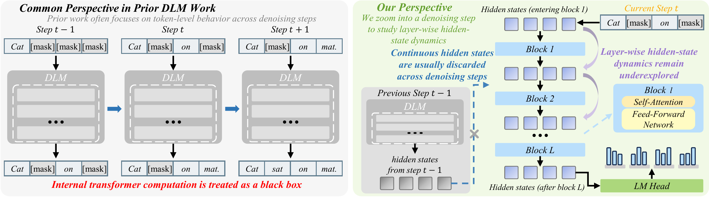
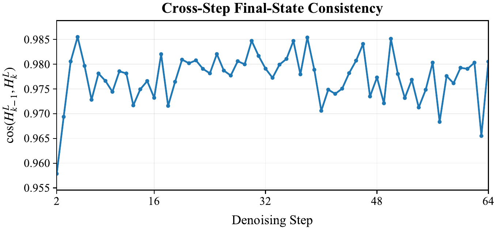

Across layers
0.930
Mean cosine similarity between adjacent layers. Deeper layers also become more predictive of the final tokens.



1 Zhejiang University, State Lab of CAD & CG
2 Zhejiang University of Technology
* Equal contribution
Method
Each denoising step produces hidden states as well as token predictions. CSRR saves the final block’s state so the first block can attend to it on the next step.

Evidence
We traced LLaDA-8B-Instruct across 64 denoising steps on ten GSM8K examples to measure how much its representations change across layers and steps.
0.930
Mean cosine similarity between adjacent layers. Deeper layers also become more predictive of the final tokens.

0.96–0.99
Approximate range of mean final-block cosine similarity between consecutive steps. This alignment motivates reusing the previous state.

Results
Compare baseline and jointly trained CSRR with the same generation length and number of forward evaluations (NFE). The paper reports the best recurrent scale for each setting.
| Benchmark | Baseline | CSRR | Gain (pp) |
|---|---|---|---|
| Countdown | 6.25% | 18.36% | +12.11 |
| GSM8K | 16.68% | 37.38% | +20.70 |
| SVAMP | 52.00% | 71.33% | +19.33 |
At 256 tokens and 128 NFE, CSRR improves accuracy on all three reasoning tasks for both Dream-7B-Base and Dream-7B-Instruct.
View Dream resultsCSRR adds 0.82% parameters. On the measured LLaDA-8B-Instruct prompt, 256 tokens at 128 NFE took 2.969 s with the baseline and 3.082 s with CSRR.
View cost comparison